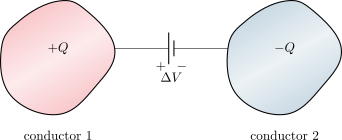

4.1 Capacitancia#
Un condensador es un dispositivo formado por dos conductores aislados entre sí, cuya función principal es almacenar carga y energía eléctrica. Al conectar estos conductores a una fuente de voltaje, adquieren cargas de igual magnitud pero de signo opuesto (\(+Q\) y \(-Q\)), generando una diferencia de potencial \(\Delta V\) entre ellos.
{kind=link}

Definimos la capacidad o capacitancia \(C\) como la razón entre la magnitud de la carga en cualquiera de los conductores y la diferencia de potencial entre ellos:
La unidad de medida en el Sistema Internacional es el faradio (F), definido como:
Dado que el faradio es una unidad muy grande, en la práctica se suelen utilizar submúltiplos como el microfaradio (\(1\text{ }\mu\text{F} = 10^{-6}\text{ F}\)) y el picofaradio (\(1\text{ pF} = 10^{-12}\text{ F}\)). La capacitancia de un sistema depende exclusivamente de su geometría y del material que separa los conductores.
Preguntas de Análisis#
Show code cell source
from IPython.display import display, HTML
quiz_capacitancia_html = """
<style>
.fisi-quiz-container {
border: 1px solid #e0e0e0;
padding: 15px;
margin-bottom: 25px;
border-radius: 8px;
background-color: #f8f9fa;
font-family: -apple-system, BlinkMacSystemFont, "Segoe UI", Roboto, Arial, sans-serif;
}
.fisi-question {
font-weight: 600;
margin-bottom: 15px;
color: #2c3e50;
}
.fisi-option {
margin-bottom: 10px;
display: flex;
align-items: flex-start;
cursor: pointer;
}
.fisi-option input {
margin-top: 4px;
margin-right: 10px;
}
.fisi-check-btn {
background-color: #f73bc5;
color: white;
border: none;
padding: 8px 20px;
border-radius: 4px;
cursor: pointer;
font-size: 14px;
margin-top: 10px;
font-weight: 500;
}
.fisi-check-btn:hover { background-color: #ab2988; }
.fisi-feedback {
margin-top: 15px;
padding: 12px;
border-radius: 6px;
display: none;
font-size: 0.95em;
}
</style>
<script>
if (typeof window.checkFisiQuiz === 'undefined') {
window.checkFisiQuiz = function(radioName, feedbackId) {
var radios = document.getElementsByName(radioName);
var selected = null;
var feedbackDiv = document.getElementById(feedbackId);
for (var i = 0; i < radios.length; i++) {
if (radios[i].checked) {
selected = radios[i];
break;
}
}
feedbackDiv.style.display = 'block';
if (!selected) {
feedbackDiv.style.backgroundColor = '#fff3cd';
feedbackDiv.style.color = '#856404';
feedbackDiv.style.border = '1px solid #ffeeba';
feedbackDiv.innerHTML = '⚠️ Por favor, selecciona una opción.';
return;
}
var isCorrect = selected.getAttribute('data-correct') === 'true';
var msg = selected.getAttribute('data-fb');
if (isCorrect) {
feedbackDiv.style.backgroundColor = '#d4edda';
feedbackDiv.style.color = '#155724';
feedbackDiv.style.border = '1px solid #c3e6cb';
feedbackDiv.innerHTML = '✅ <strong>¡Correcto!</strong><br>' + msg;
} else {
feedbackDiv.style.backgroundColor = '#f8d7da';
feedbackDiv.style.color = '#721c24';
feedbackDiv.style.border = '1px solid #f5c6cb';
feedbackDiv.innerHTML = '❌ <strong>Incorrecto.</strong><br>' + msg;
}
};
}
</script>
<div class="fisi-quiz-container">
<div class="fisi-question">
1. Un condensador está compuesto por dos conductores aislados. Al conectarse a una fuente de voltaje, ¿cómo se distribuye la carga entre ellos y a qué se refiere exactamente el valor "Q" en la fórmula C = Q / ΔV?
</div>
<label class="fisi-option">
<input type="radio" name="qcap1" value="a" data-fb="Incorrecto. Los condensadores no almacenan cargas del mismo signo; la batería extrae electrones de una placa para depositarlos en la otra.">
<span>Ambos conductores adquieren cargas del mismo signo (+Q y +Q), y se utiliza la suma de ambas (2Q) en la fórmula de la capacitancia.</span>
</label>
<label class="fisi-option">
<input type="radio" name="qcap1" value="b" data-correct="true" data-fb="¡Exacto! El condensador en su conjunto permanece eléctricamente neutro (carga neta cero). Sin embargo, cuando hablamos de 'la carga del condensador' (Q), nos referimos exclusivamente a la magnitud absoluta de la carga presente en uno solo de sus conductores.">
<span>Un conductor adquiere una carga +Q y el otro -Q (carga neta total cero), pero en la fórmula "Q" representa únicamente la magnitud absoluta de la carga en cualquiera de los conductores.</span>
</label>
<label class="fisi-option">
<input type="radio" name="qcap1" value="c" data-fb="Incorrecto. Por conservación de la carga y el funcionamiento del circuito, ambos conductores siempre adquieren magnitudes de carga idénticas, independientemente de su tamaño.">
<span>Los conductores adquieren cargas de diferente magnitud dependiendo de sus tamaños geométricos, por lo que se utiliza el promedio en la fórmula.</span>
</label>
<label class="fisi-option">
<input type="radio" name="qcap1" value="d" data-fb="Incorrecto. Si un conductor estuviera neutro, no se establecería un campo eléctrico uniforme entre ellos y no funcionaría como condensador.">
<span>Un conductor acumula toda la carga (+Q) mientras que el otro permanece siempre en estado neutro (0).</span>
</label>
<button class="fisi-check-btn" onclick="checkFisiQuiz('qcap1', 'feedback-cap1')">Comprobar</button>
<div class="fisi-feedback" id="feedback-cap1"></div>
</div>
<div class="fisi-quiz-container">
<div class="fisi-question">
2. Basándote en la relación matemática C = Q / ΔV, ¿qué interpretación física podemos deducir si decimos que un sistema posee una "alta capacitancia"?
</div>
<label class="fisi-option">
<input type="radio" name="qcap2" value="a" data-fb="Incorrecto. Si requiere un gran voltaje para almacenar poca carga, significa que la fracción Q/ΔV es pequeña, es decir, tiene una baja capacitancia.">
<span>Que el condensador requiere que se le aplique una diferencia de potencial inmensamente alta para poder almacenar una pequeña cantidad de carga.</span>
</label>
<label class="fisi-option">
<input type="radio" name="qcap2" value="b" data-fb="Incorrecto. La capacitancia mide la capacidad estática de almacenamiento de carga por unidad de voltaje, no la velocidad del movimiento de las cargas.">
<span>Que las cargas eléctricas pueden viajar extremadamente rápido entre los conductores debido a un campo eléctrico muy intenso.</span>
</label>
<label class="fisi-option">
<input type="radio" name="qcap2" value="c" data-correct="true" data-fb="¡Correcto! Una capacitancia alta (una gran cantidad de Faradios) indica que el dispositivo es muy eficiente guardando carga eléctrica: con apenas aplicar unos pocos voltios (ΔV pequeño), es capaz de acumular una gran cantidad de carga (Q grande).">
<span>Que el condensador es capaz de almacenar una gran cantidad de carga eléctrica (Q) incluso cuando se le aplica una diferencia de potencial (ΔV) muy pequeña.</span>
</label>
<label class="fisi-option">
<input type="radio" name="qcap2" value="d" data-fb="Incorrecto. El condensador no convierte ni anula el voltaje para transformarlo en calor (eso es propio del efecto Joule en las resistencias).">
<span>Que el dispositivo anula rápidamente todo el voltaje externo aplicado, disipando la energía en forma térmica.</span>
</label>
<button class="fisi-check-btn" onclick="checkFisiQuiz('qcap2', 'feedback-cap2')">Comprobar</button>
<div class="fisi-feedback" id="feedback-cap2"></div>
</div>
<div class="fisi-quiz-container">
<div class="fisi-question">
3. Si conectas un condensador a una batería de 5 V, y luego lo desconectas y lo conectas a una batería más potente de 10 V (duplicando el voltaje ΔV), ¿qué ocurrirá con el valor de su capacitancia (C)?
</div>
<label class="fisi-option">
<input type="radio" name="qcap3" value="a" data-fb="Incorrecto. Aunque la fórmula es C = Q/ΔV, C no depende de ΔV. Al duplicar el voltaje, la carga Q que fluye hacia las placas también se duplicará, manteniendo el cociente constante.">
<span>La capacitancia se reducirá exactamente a la mitad, ya que matemáticamente es inversamente proporcional al voltaje aplicado.</span>
</label>
<label class="fisi-option">
<input type="radio" name="qcap3" value="b" data-fb="Incorrecto. La capacitancia no aumenta al subir el voltaje; lo que aumenta al doble es la cantidad de carga almacenada.">
<span>La capacitancia se duplicará, acompañando linealmente el aumento de la diferencia de potencial.</span>
</label>
<label class="fisi-option">
<input type="radio" name="qcap3" value="c" data-correct="true" data-fb="¡Exacto! Esta es una de las reglas de oro: la capacitancia de un sistema es una propiedad intrínseca que depende exclusivamente de su geometría (tamaño, forma, separación) y del material aislante (dieléctrico) entre sus placas. No depende ni del voltaje aplicado ni de la carga almacenada.">
<span>La capacitancia se mantendrá exactamente igual, ya que este valor depende exclusivamente de la geometría del dispositivo y del material entre los conductores.</span>
</label>
<label class="fisi-option">
<input type="radio" name="qcap3" value="d" data-fb="Incorrecto. La capacitancia es una constante geométrica en un condensador ideal y no fluctúa buscando estabilización por cambios de voltaje externo.">
<span>La capacitancia fluctuará de manera caótica hasta que el campo eléctrico se vuelva a estabilizar en las placas.</span>
</label>
<button class="fisi-check-btn" onclick="checkFisiQuiz('qcap3', 'feedback-cap3')">Comprobar</button>
<div class="fisi-feedback" id="feedback-cap3"></div>
</div>
"""
display(HTML(quiz_capacitancia_html))